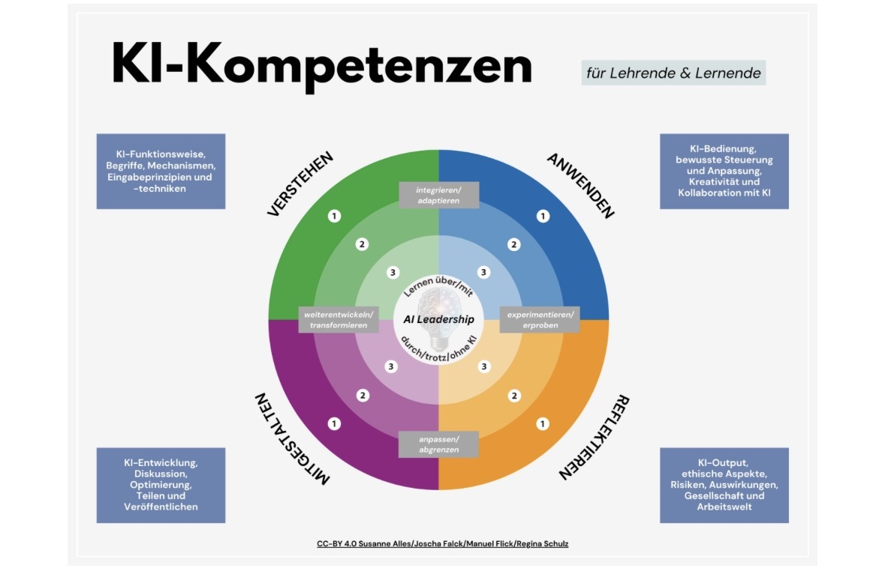
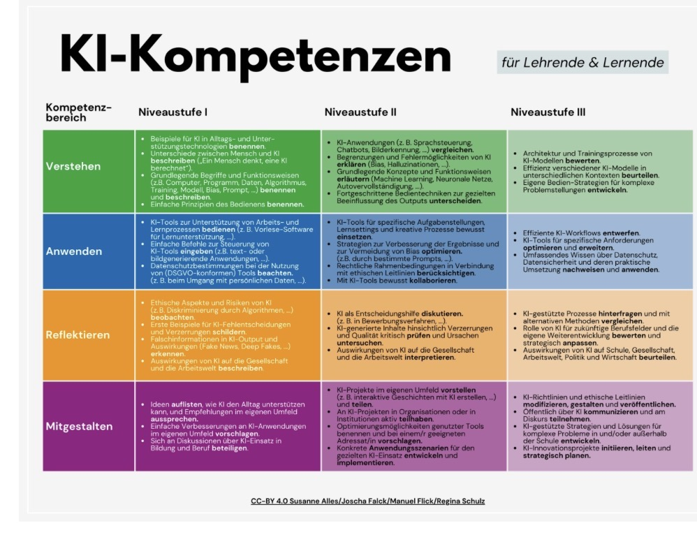

Verstehen
I · Einstieg: Erklären, wie Daten eine Vorhersage beeinflussen.
II · Vertiefung: Modelle und Grenzen anhand neuer Fälle vergleichen.
III · Ausblick: Architekturen und Trainingsverfahren bewerten.
Lernbeleg: Datenvergleich →KI-Kompetenz heisst: verstehen, ausprobieren, hinterfragen und mitgestalten. Du behältst die Regie – auch wenn du dich bewusst gegen KI entscheidest.
Die vier Bereiche greifen ineinander. Du begegnest mehreren davon in jedem Kapitel. Dieser Lernweg passt das Modell von Alles, Falck, Flick und Schulz an die 3. Sek an: Schwerpunkt Niveau I, ausgewählte Aufgaben auf Niveau II. Niveau III ist ein Ausblick und kein Abschlussziel dieser Einheit.
Die folgenden Beschreibungen sind didaktisch vereinfacht. Sie sind keine offizielle Einstufung oder Zertifizierung.
I · Einstieg: Erklären, wie Daten eine Vorhersage beeinflussen.
II · Vertiefung: Modelle und Grenzen anhand neuer Fälle vergleichen.
III · Ausblick: Architekturen und Trainingsverfahren bewerten.
Lernbeleg: Datenvergleich →I · Einstieg: Einen klaren Auftrag formulieren und Ergebnisse prüfen.
II · Vertiefung: Aufträge gezielt verbessern und Arbeit sinnvoll aufteilen.
III · Ausblick: Komplexe KI-Arbeitsabläufe optimieren.
Lernbeleg: Lernkarte mit Vergleich →I · Einstieg: Fehler, Datenschutzprobleme und Verzerrungen erkennen.
II · Vertiefung: Folgen für verschiedene Menschen begründet abwägen.
III · Ausblick: Gesellschaftliche Entwicklungen umfassend beurteilen.
Lernbeleg: Faire Klassenregel →I · Einstieg: Eine Verbesserung vorschlagen und diskutieren.
II · Vertiefung: Einen Entwurf testen, Feedback umsetzen und teilen.
III · Ausblick: KI-Projekte und Richtlinien strategisch gestalten.
Lernbeleg: Testprotokoll →Wähle für jeden Bereich deinen Stand zu Beginn und nach der Einheit. Ergänze einen konkreten Beleg und deinen nächsten Schritt. Die Selbsteinschätzung ist keine Note und entspricht nicht automatisch den Niveaustufen I–III.
Die Einträge bleiben in diesem Browser. Auf gemeinsam genutzten Geräten sind sie für andere sichtbar. Auf der Startseite kannst du alle Einträge löschen.
Das AILit-Framework (2026) beschreibt Wissen, Fähigkeiten und Fertigkeiten sowie Haltungen. Seine vier Bereiche sind anders geschnitten als das Modell oben. Diese Zuordnung ist unsere Unterrichtsplanung, keine Gleichsetzung der Modelle.
| AILit-Bereich | Aufgabe und sichtbarer Beleg |
|---|---|
| Mit KI bewusst umgehen | Kapitel 1, 2 und 4: Modelle erklären, Antworten prüfen, Fairness und Umweltfolgen abwägen. |
| KI kreativ anwenden | Kapitel 3: zwei Lernkartenentwürfe vergleichen, überarbeiten und eigene Beiträge kennzeichnen. |
| KI gezielt einsetzen | Kapitel 3 und Projekt: Arbeit aufteilen, Kriterien festlegen und begründen, was ohne KI besser gelingt. |
| KI aktiv mitgestalten | Obstlabor und Projekt: Datenänderungen untersuchen, Prüffälle entwickeln und Feedback umsetzen; ein Einstieg in die Systemgestaltung. |
Übe dabei sechs Haltungen: neugierig fragen, reflektierend prüfen, verantwortungsbewusst entscheiden, innovativ entwerfen, anpassungsfähig verbessern und empathisch andere Perspektiven einbeziehen.
Start: 10 Minuten für den Kompass. Die zusätzlichen Kompetenzaufträge benötigen je 10–15 Minuten; Abschlussvergleich etwa 10 Minuten. Mit allen Ergänzungen sind für die Kapitel etwa 6–7 Lektionen einzuplanen, dazu 1–2 Lektionen Projekt. Alternativ wählen Sie einzelne Vertiefungen aus.
Lassen Sie Lernende erst selbst begründen, dann Hilfen öffnen. Beurteilen Sie Lernbelege und Überarbeitung, nicht die Menge an KI-Nutzung. Mündliche Erläuterungen oder Papierjournale sind gleichwertige Zugänge. Die Simulationen fördern Teilkompetenzen; sie weisen keine sichere Bedienung eines realen KI-Dienstes nach.
Transferfrage: Was kann die Person nach der Hilfe selbst erklären oder lösen? Ein gemeinsames Lernziel kann mit, über oder ohne KI erreicht werden. Externe KI-Angebote sind für diese Aufgaben nicht erforderlich.
Die Aufgaben und Kurzbeschreibungen sind für diese Lernwerkstatt bearbeitet. Die zwei bereitgestellten Abbildungen werden unverändert wiedergegeben; die Textbeschreibungen oben machen die wesentlichen Inhalte auch ohne Bild zugänglich.
Dies ist eine Bearbeitung einer Originalfassung der OECD und der Europäischen Union. Die in dieser Fassung geäusserten Meinungen und Argumente sollten nicht als offizielle Ansichten der OECD, ihrer Mitgliedsländer oder der Europäischen Union dargestellt werden.

